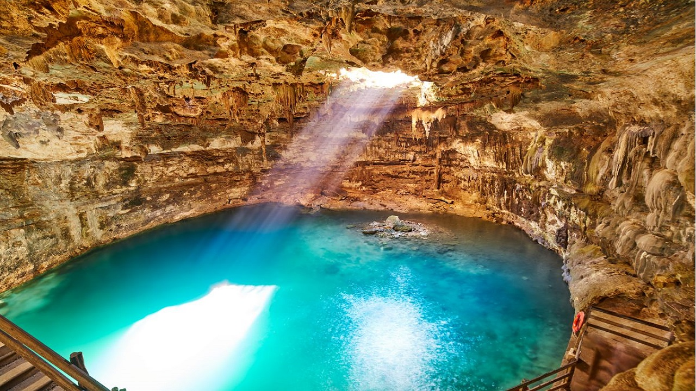
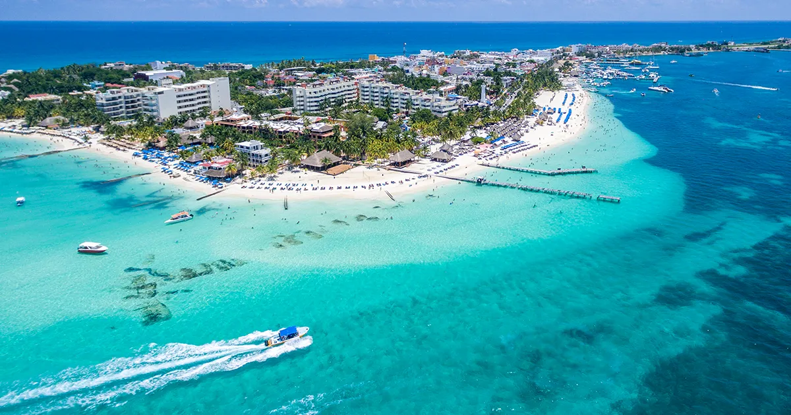
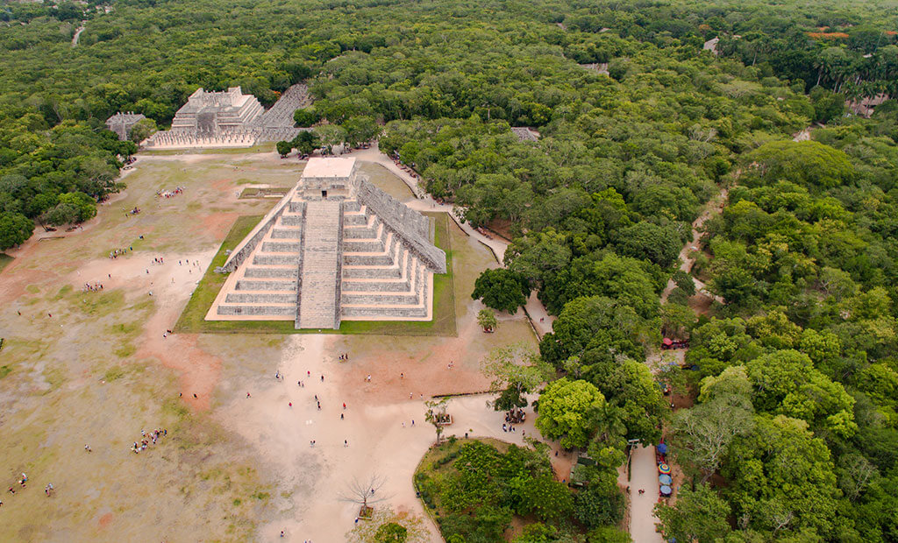

Cancún, un destino turístico mundialmente famoso, destaca por sus playas de arena blanca y agua turquesa, su infraestructura hotelera y su clima cálido y húmedo. Es conocido por su atractivo turístico y su posición estratégica como centro de conexiones aéreas. Además, Cancún ofrece una amplia gama de actividades, desde relajación en spas hasta aventuras acuáticas

Nadar en cenotes es una experiencia popular y segura
Los cenotes, pozos naturales de agua dulce, ofrecen aguas cristalinas y tranquilas, ideales para nadar, hacer snorkel y explorar la belleza subacuática.
Isla Mujeres es un encantador lugar para vacacionar en el Caribe
Explora Punta Sur con sus impresionantes vistas y esculturas, recorre el centro en carrito de golf y visita el Museo Subacuático de Arte.


Chichén Itzá una de las Siete Maravillas del Mundo Moderno en 2007
Su principal atractivo es el Templo de Kukulcán, una pirámide impresionante que refleja el conocimiento astronómico y matemático de los mayas.
Descubre la magia de México: playas de ensueño, ruinas antiguas y una rica gastronomía que te dejará sin aliento
Aquí te dejamos más opciones que puedes visitar en Cancún